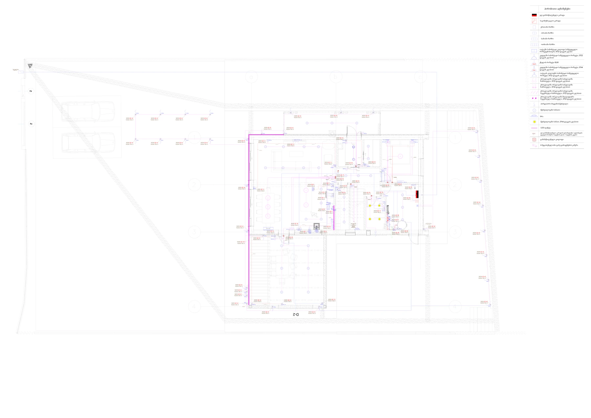

PROJECT A / LV + ELV01 / PRIVATE RESIDENCE
Building systems,
at a domestic scale.
Electrical and data-network documentation for a two-storey private residence, from socket and lighting layouts to earthing and the main distribution board.
View Project A 9 pages ↗